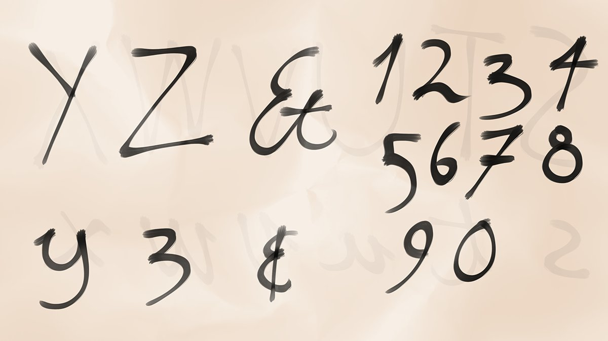

When I get better at writing I want to write a letter to Nene. But what should it say?
I still like you 16.7%
I’m sorry I left 0%
Please come and visit 83.3%
19th of Kythorn, 1494 DR 11:00 PM
No sleeping in today, Breadstick. We’ve got a job to do.
20th of Kythorn, 1494 DR 8:59 AM
I injured my foot while walking today but I still managed to deliver all the letters. Breadstick says hello.
20th of Kythorn, 1494 DR 4:22 PM
Oh I didn’t think of that. Usually I am barefoot. Is there someplace in Waterdeep that makes boots for halflings?
20th of Kythorn, 1494 DR 4:36 PM
I have money now because of my job! Well not yet but soon.
20th of Kythorn, 1494 DR 6:36 PM
Wait you all think I should ask Nene to visit? Isn’t that a bit too forward? Oh I’m not sure but if that’s what you say then I’ll consider it.
20th of Kythorn, 1494 DR 10:38 PM
What kind of boots should I get?
Tall boots 50%
Short boots 50%
20th of Kythorn, 1494 DR 11:00 PM
I found the shop that @StrahnEPA was talking about but I didn’t have any money yet because Fleet Feet is now paying monthly and I still have to wait for the decision about tall or short boots.
21st of Kythorn, 1494 DR 6:30 PM
Timmy said that hiring me makes the accounting more complicated so he can’t do it weekly any more.
21st of Kythorn, 1494 DR 6:35 PM
OK I will think about that. Thank you for supporting me!
21st of Kythorn, 1494 DR 6:39 PM
I usually don’t buy things from shops it will be a new experience for me.
21st of Kythorn, 1494 DR 8:29 PM
I understand. Price goes up and down. It’s another natural cycle I need to learn.
21st of Kythorn, 1494 DR 11:15 PM
You made the bars the same length again. How can I choose the right boots now?
21st of Kythorn, 1494 DR 10:38 PM
I haven’t been paid for my work yet. What should I do?
Complain angrily 12.5%
Refuse dangerous packages 50%
Wait politely 37.5%
21st of Kythorn, 1494 DR 11:20 PM
If I have to try that I will. This is a difficult situation and I have a feeling my usual tricks like crying won’t work here.
22nd of Kythorn, 1494 DR 1:13 PM
Now I’m scared. 😧
22nd of Kythorn, 1494 DR 1:17 PM
@RogueMostLikely replied…
Replying to @RogueMostLikely
I’m not that strong but I do have little knife. Do you think it will help though?
22nd of Kythorn, 1494 DR 1:43 PM
@RogueMostLikely replied…
OK I will refuse to handle dangerous packages until I am paid. I will do it politely.
22nd of Kythorn, 1494 DR 10:32 PM
What’s the best way to be polite to someone?
Smile at them 18.8%
Say please and thank you 25%
Praise them 12.5%
Share knife fighting tips 43.8%
22nd of Kythorn, 1494 DR 11:00 PM
It’s OK I forgive you.
23rd of Kythorn, 1494 DR 12:40 PM
It will be fine. Lots of people are bad at knife fighting so giving tips will help them.
24th of Kythorn, 1494 DR 1:03 AM
I am trying on boots at the shoe shop. I won’t be able to buy a pair today but I can find out which ones fit.
23rd of Kythorn, 1494 DR 12:41 PM
At the shoe store the lady recommended a pair of tall boots. She said tall is better because it keeps the mud off when I’m walking. She also said I should get socks or wraps.
23rd of Kythorn, 1494 DR 3:17 PM
@RogueMostLikely sent a message…
Replying to @RogueMostLikely
You have a cat?
23rd of Kythorn, 1494 DR 5:11 PM
@RogueMostLikely replied…
Replying to @RogueMostLikely
Forget Breadstick? I can’t do that!
23rd of Kythorn, 1494 DR 5:15 PM
@RogueMostLikely replied…
Replying to @RogueMostLikely
Wow don’t be so grumpy J.
23rd of Kythorn, 1494 DR 5:20 PM
@RogueMostLikely replied…
Replying to @RogueMostLikely
I saw you pet Breadstick once. You can’t fool me.
23rd of Kythorn, 1494 DR 11:25 PM
I finished my letters practice! I even did the numbers too! I’m so clever.

23rd of Kythorn, 1494 DR 9:31 PM
Hello @kthexsis your new name is Thexy now. I decided it. 🙂🙂🙂
23rd of Kythorn, 1494 DR 9:34 PM
Good choice everyone. That was the choice that I came up with on my own! I will share interesting knife tips to be polite.
23rd of Kythorn, 1494 DR 10:35 PM
I want to give my friends new friendly names. Who should I give a name to next?
AeKeek 69.2%
Strahn 30.8%
23rd of Kythorn, 1494 DR 11:10 PM
@RogueMostLikely replied…
Don’t tell anyone but Sulkie isn’t my real name. You can have a special cover name like me.
24th of Kythorn, 1494 DR 12:47 AM
@RogueMostLikely replied…
Replying to @RogueMostLikely
Stop telling fibs. 😠😠
24th of Kythorn, 1494 DR 12:54 AM
You can still have your name and like it. But imagine if you had more than one! I have lots of names. Sulkie. Ghost. Rat. My real name. My family name.
24th of Kythorn, 1494 DR 12:53 AM
Oh my good friend AeKeek. Now I get to be the grown up and teach you something. 😊 When you have lots of names you can be different on the outside, but you’re still you on the inside.
24th of Kythorn, 1494 DR 1:28 AM
The decision isn’t made yet and you can always say no.
24th of Kythorn, 1494 DR 1:34 AM
@RogueMostLikely replied…
So I explained to Timmy that I didn’t want to take any more dangerous packages until I get paid and to be polite I explained how the best way to stab someone is when they don’t expect it.
24th of Kythorn, 1494 DR 7:32 PM
He said I’ll get paid for sure at the end of the week and every week after.
24th of Kythorn, 1494 DR 7:33 PM
@RogueMostLikely replied…
Replying to @RogueMostLikely
😊😊
24th of Kythorn, 1494 DR 7:52 PM
Usually I trick people into helping me I didn’t know being polite could be so good.
24th of Kythorn, 1494 DR 7:34 PM
Looks like I have to come up with a friendly friend name for AeKeek! Sorry Strahn I will come up with a name for you at a different time.
24th of Kythorn, 1494 DR 10:36 PM
Is it still OK if I make up a name? I don’t want to hurt your feelings. 😧
24th of Kythorn, 1494 DR 10:38 PM
Um well you know how if I smile at you it’s because I like you? Well if I use a special name it’s kind of the same. It’s so you know your friends like you.
25th of Kythorn, 1494 DR 1:21 AM
Smiling is that thing we do with our mouths remember? I told you about it when you were visiting.
25th of Kythorn, 1494 DR 1:22 AM
Yes! I think you understand now. 🙂✨
25th of Kythorn, 1494 DR 1:29 AM
Do you think my Great Path is a good thing?
Yes 54.5%
No 18.2%
Don’t know 27.3%
24th of Kythorn, 1494 DR 11:02 PM
I thought I knew what it was, but now I’m not sure.
25th of Kythorn, 1494 DR 12:25 AM
@RogueMostLikely sent a message…
Replying to @RogueMostLikely
I climb up to the roof sometimes so I can see the stars.
25th of Kythorn, 1494 DR 12:38 AM
I have been thinking about a name for AeKeek all morning while delivering letters. I will have a good one when I finish work.
25th of Kythorn, 1494 DR 1:52 PM
I have thought about it all day and I want to give AeKeek the name Kiki.
25th of Kythorn, 1494 DR 6:04 PM
I hope AeKeek likes it too!
25th of Kythorn, 1494 DR 6:09 PM
Thank you Thexy!
25th of Kythorn, 1494 DR 6:15 PM
😀
26th of Kythorn, 1494 DR 4:02 PM
I have so many friends now I can barely count them on one hand!
25th of Kythorn, 1494 DR 6:13 PM
Breadstick has lots of ways of stretching and they’re all cute.
25th of Kythorn, 1494 DR 8:41 PM
Most people think the Great Path is good. I used to think so, but now I’m not sure. It brought me to Breadstick and J, but it took me from my homeland and Nene.
25th of Kythorn, 1494 DR 10:42 PM
I thought it would lead me to my grandmama, but now it’s been gone for weeks.
25th of Kythorn, 1494 DR 10:46 PM
I want it to come back. But I think I’m scared about what if it does?
25th of Kythorn, 1494 DR 10:49 PM
I come from far away. Guess which direction I’m from.
North 20%
South 30%
East 40%
West 10%
25th of Kythorn, 1494 DR 11:06 PM
I don’t know how I feel today.
26th of Kythorn, 1494 DR 1:51 PM
Thank you Kiki.
26th of Kythorn, 1494 DR 2:57 PM
Come on Breadstick we need to get back to work.
26th of Kythorn, 1494 DR 2:12 PM
I have two letters addressed to the same person from different people and they both smell like perfume.
26th of Kythorn, 1494 DR 2:49 PM
I am going to hold onto these I have an idea.
26th of Kythorn, 1494 DR 2:49 PM
Here’s what I did. I took both the perfume letters and I delivered them to the addresses they came from. Except I swapped them.
26th of Kythorn, 1494 DR 6:47 PM
It took a while because I had to read the addresses but thanks to my letters practice I succeeded.
26th of Kythorn, 1494 DR 6:48 PM
I couldn’t read the names so I don’t know if it was girls sending letters to a boy or boys sending letters to a girl or girls sending letters to a girl or boys sending letters to a boy.
28th of Kythorn, 1494 DR 12:51 AM
All the rich people in this city wear perfume. It’s annoying.
28th of Kythorn, 1494 DR 12:52 AM
If they find out I did it I’ll just make up a lie.
28th of Kythorn, 1494 DR 12:57 AM
Breadstick was chasing the feather brush and fell of the bed it was so funny!
26th of Kythorn, 1494 DR 9:37 PM
You guessed that I’m from the East! Wow you got it right. How did you know?
26th of Kythorn, 1494 DR 10:34 PM
Would it be better if I asked my questions earlier? I think I should sleep sooner.
The normal time is best 66.7%
Earlier is better 33.3%
26th of Kythorn, 1494 DR 11:00 PM
Delivering letters is a lot of work. I hope getting boots will make it more comfortable.
27th of Kythorn, 1494 DR 8:30 PM
Oh! I fell asleep.
27th of Kythorn, 1494 DR 11:00 PM
So people think the normal time is best. I guess I have to think so too.
27th of Kythorn, 1494 DR 11:00 PM
What did you think of my perfume letter swap plan?
Good idea 40%
It was naughty 60%
27th of Kythorn, 1494 DR 11:02 PM
If it’s confusing pick the naughty option. I think that makes sense.
28th of Kythorn, 1494 DR 12:59 AM
@RogueMostLikely sent a message…
Replying to @RogueMostLikely
Did I finally make a question with a choice you like?
27th of Kythorn, 1494 DR 11:53 PM
@RogueMostLikely replied…
Replying to @RogueMostLikely
Would you have done the same thing with the letters? I really want to know. 😯
27th of Kythorn, 1494 DR 11:58 PM
@RogueMostLikely replied…
I just got back from shopping with my new money! I got paid six gold pieces today and I spent four silver pieces on my new boots and socks. I am not used to having boots but they fit on my feet and legs good.
28th of Kythorn, 1494 DR 8:16 PM
That reminds me I haven’t washed my clothes since a month ago. I should wash them tomorrow.
28th of Kythorn, 1494 DR 8:43 PM
You thought my letter swap plan was naughty! Sorry but I delivered those letters where they will do the most good, so there.
28th of Kythorn, 1494 DR 10:44 PM
I got this job to help Jurian pay for the room. Should I still do that?
28th of Kythorn, 1494 DR 11:12 PM
@RogueMostLikely replied…
Replying to @RogueMostLikely
Please don’t be cross I want to help you.
29th of Kythorn, 1494 DR 12:15 AM
@RogueMostLikely replied…
Replying to @RogueMostLikely
OK good I don’t want you to be cross. When you get back will you help me count my money?
29th of Kythorn, 1494 DR 12:18 AM
@RogueMostLikely replied…
Yes I practiced my numbers but I still have trouble sometimes. I will remember your idea it sounds useful. I still need J’s help because I need to know if I’m getting the right amount from work.
29th of Kythorn, 1494 DR 1:27 AM
I think I understand what you’re saying.
28th of Kythorn, 1494 DR 11:43 PM
I’m washing my clothes in the harbour. I’m singing a song while I work! When I get back to the room I will play the song on Rebecca.
29th of Kythorn, 1494 DR 11:40 AM
I managed to play the whole song without making Rebecca squeak!
29th of Kythorn, 1494 DR 3:20 PM
The words to the song go like this: I’m washing my clothes I’m washing my clothes I’m washing my clothes In the harbour sea
29th of Kythorn, 1494 DR 3:23 PM
@kthexsis sent a message…
Hiding is good for your safety.
29th of Kythorn, 1494 DR 7:27 PM
Wow, lots of people think I should pay Jurian. I also think so too but I wanted to make sure.
29th of Kythorn, 1494 DR 10:33 PM
I get seven silver a day if I accept dangerous packages. How much rent should I give to Jurian each week?
Seven silver 0%
More 0%
Less 22.2%
Ask her 77.8%
29th of Kythorn, 1494 DR 11:02 PM
I put the ask choice so she will be happy.
29th of Kythorn, 1494 DR 11:05 PM
That’s so much!
30th of Kythorn, 1494 DR 11:50 AM
I was out and about today. I found a shop at the market that sells pet food so I bought a week’s supply for Breadstick. It cost me 5 copper pieces.
30th of Kythorn, 1494 DR 8:04 PM
I did Kiki’s counting trick and I have five gold pieces and five silver pieces and five copper pieces. Wow.
30th of Kythorn, 1494 DR 10:27 PM
The most popular choice was to ask so I will. @RogueMostLikely I make seven silver a day how much should I give you every week for the room?
30th of Kythorn, 1494 DR 10:50 PM
@RogueMostLikely replied…
Replying to @RogueMostLikely
Oh I almost forgot about that. I will do it during my route at work tomorrow I promise.
30th of Kythorn, 1494 DR 11:53 PM
Should I tell you more songs I came up with or should I draw more pictures?
Songs 27.3%
Pictures 72.7%
30th of Kythorn, 1494 DR 11:00 PM
Hello @RogueMostLikely I found what you were looking for. The master of the house will be absent for a fortnight starting midweek. The second window on the right doesn’t lock. I also have a letter that was addressed to the manor. I’ll leave it on your bed.
1st of Flamerule, 1494 DR 1:24 PM
@RogueMostLikely replied…
Replying to @RogueMostLikely
Did I do good?
1st of Flamerule, 1494 DR 2:12 PM
@RogueMostLikely replied…
Wait if I live in the princess suite and the people at Halambar’s called me your highness does that mean I’m a real princess? 🤩
1st of Flamerule, 1494 DR 2:08 PM
Wow. 😮
1st of Flamerule, 1494 DR 2:12 PM
@kthexsis sent a message…
It is good I get lots of exercise and so does Breadstick. I get to practice maps and counting and reading so I get smarter. Also I can buy warm stew whenever I want now.
1st of Flamerule, 1494 DR 4:56 PM
I don’t know about your city but there are lots of cats here without a home. I couldn’t help all of them but I did help one.
1st of Flamerule, 1494 DR 5:18 PM
Oh good I get to draw more pictures! I like drawing.
1st of Flamerule, 1494 DR 10:30 PM
Who should I draw next?
Breadstick 20%
Thexy 60%
Nene 20%
1st of Flamerule, 1494 DR 11:00 PM
You’re already popular! Breadstick is jealous.
1st of Flamerule, 1494 DR 11:14 PM
You know me and I like you.
1st of Flamerule, 1494 DR 11:32 PM
Why is ink so expensive?!
2nd of Flamerule, 1494 DR 2:16 PM
I can’t even afford a new set with all my money so I had to get an old one. It didn’t come with my favourite colour red.
3rd of Flamerule, 1494 DR 12:46 AM
I got a secondhand box of inks with half the colours missing but it still cost me a whole gold piece!
2nd of Flamerule, 1494 DR 5:35 PM
Does charcoal come in different colours?
2nd of Flamerule, 1494 DR 5:50 PM
I will take another look at the market tomorrow. I can use my coloured inks for now and then save them for special drawings later. What’s prestidigitation?
2nd of Flamerule, 1494 DR 5:56 PM
Oh I wonder if that’s what Nene used on me.
2nd of Flamerule, 1494 DR 6:00 PM
Pigment is a funny word.
3rd of Flamerule, 1494 DR 12:39 AM
I drew my friend Thexy!
2nd of Flamerule, 1494 DR 10:35 PM
Lots of people wanted me to draw you! It was fun and I’m glad I got the colours to make it even better.
2nd of Flamerule, 1494 DR 10:52 PM
Thank you Kiki!
3rd of Flamerule, 1494 DR 12:40 AM
What is your favourite kind of weather?
Sunny 0%
Rainy 38.5%
Snowy 38.5%
Windy 23.1%
2nd of Flamerule, 1494 DR 11:01 PM
One of my deliveries today kept floating away so I had to tie it down when I delivered it.
3rd of Flamerule, 1494 DR 6:53 PM
Some temple on Flint Street. It’s just around the corner from the Fleet Feet office.
3rd of Flamerule, 1494 DR 7:31 PM
Wow yes I did ask it how did you guess? It didn’t speak but I think it wanted to be in the clouds.
4th of Flamerule, 1494 DR 12:20 AM
I talk to Breadstick a lot even though Breadstick can’t speak. I think it’s easier because saying the right thing is really hard sometimes but cats and deliveries don’t get mad at you if you make a mistake.
4th of Flamerule, 1494 DR 12:30 AM
I don’t understand all the things you said but if you want to visit I can introduce you to Breadstick. Breadstick is kind of lazy but became good friends with Kiki and J.
4th of Flamerule, 1494 DR 12:41 AM
I’m not sure, but maybe? Kiki brought feathers to make a cat toy but Kiki is made of feathers so I don’t know if that counts.
4th of Flamerule, 1494 DR 12:47 AM
Oh! Um I don’t know if cats like those things but I do. 😗😗
4th of Flamerule, 1494 DR 12:55 AM
I live in Waterdeep.
4th of Flamerule, 1494 DR 10:39 AM
Oh I’m sorry that you can’t come.
4th of Flamerule, 1494 DR 1:57 PM
I work for the post! Well, sort of. There’s more than one.
4th of Flamerule, 1494 DR 2:39 PM
There’s no magic it’s just people like me. I have to walk up and down streets all day carrying a delivery bag and a lazy cat.
4th of Flamerule, 1494 DR 3:01 PM
You picked rainy and snowy. Interesting. I like all kinds of weather because of the natural cycles.
3rd of Flamerule, 1494 DR 10:33 PM
If I draw a rainy and snowy picture, what should it be about?
A person 22.2%
A place 33.3%
A thing 44.4%
3rd of Flamerule, 1494 DR 11:00 PM
Today was so long. One of the other couriers was sick so I had to stay longer at the office and sort mail.
4th of Flamerule, 1494 DR 8:28 PM
@RogueMostLikely sent a message…
Replying to @RogueMostLikely
Can I drink?
4th of Flamerule, 1494 DR 8:30 PM
@RogueMostLikely replied…
Replying to @RogueMostLikely
Boo!
4th of Flamerule, 1494 DR 8:46 PM
@RogueMostLikely replied…
You have to eat and drink! 😧
4th of Flamerule, 1494 DR 8:46 PM
Don’t be a fussy eater like Breadstick.
4th of Flamerule, 1494 DR 9:08 PM
Oh. I thought you just had a decorated face.
4th of Flamerule, 1494 DR 10:30 PM
I made a mistake. 🙁
4th of Flamerule, 1494 DR 10:51 PM
You know how I bought a weeks worth of food for Breadstick? Breadstick won’t eat it unless I mix it with my food. 😑
4th of Flamerule, 1494 DR 9:14 PM
I didn’t think of that but maybe you’re right! Now I like Breadstick even more. The function of cats is to be allies of people. We hunt together and work together and sleep together and keep each other warm.
5th of Flamerule, 1494 DR 12:20 AM
This is important. I think, I have to do something.
5th of Flamerule, 1494 DR 12:39 AM
Wow, people chose that I should draw a picture of a snowy rainy thing.
4th of Flamerule, 1494 DR 10:31 PM
What kind of snowy rainy thing should I draw?
Big thing 20%
Small thing 10%
Living thing 70%
4th of Flamerule, 1494 DR 11:00 PM
I asked this morning and Fleet Feet does do deliveries to other cities once a week. There’s a special long distance courier.
5th of Flamerule, 1494 DR 2:18 PM
A drawing of a snowy rainy living thing. I will draw it.
5th of Flamerule, 1494 DR 10:31 PM
Deliveries connect people, and being together is good. These ideas are important. What’s wrong with me?
Happy tears 22.2%
Sad tears 22.2%
Both 55.6%
5th of Flamerule, 1494 DR 11:05 PM
I made a mistake. I made a mistake. I made a mistake. I made a mistake. I made a mistake. I made a mistake. I made a mistake. I made a mistake. I made a mistake. I made a mistake. I made a mistake. I made a mistake. I made a mistake. I made a mistake. I made a mistake. I made a m
5th of Flamerule, 1494 DR 11:10 PM